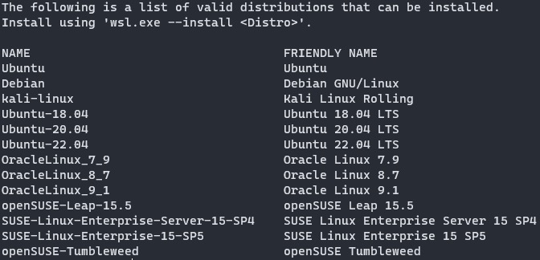
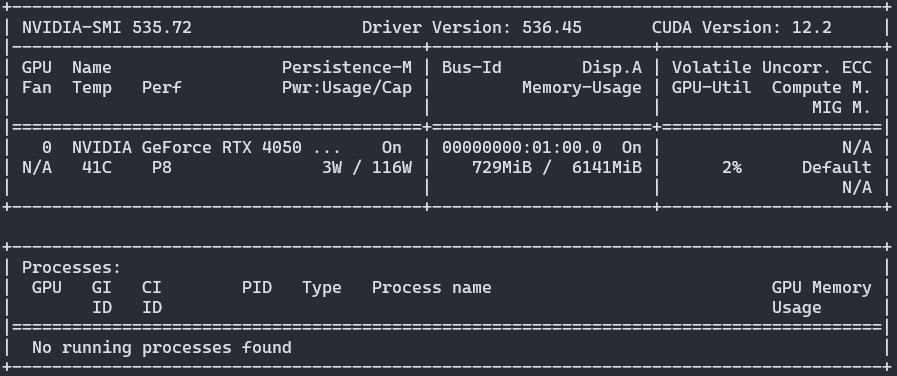
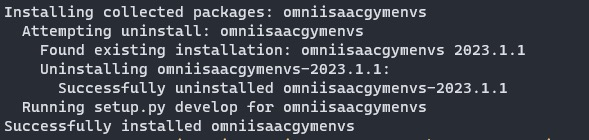
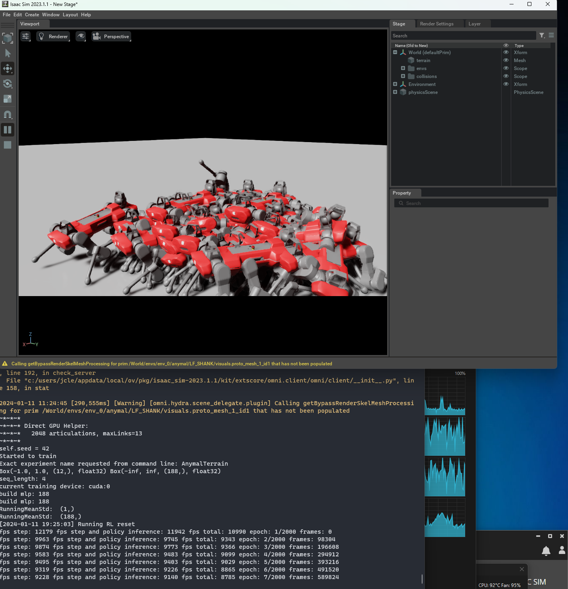
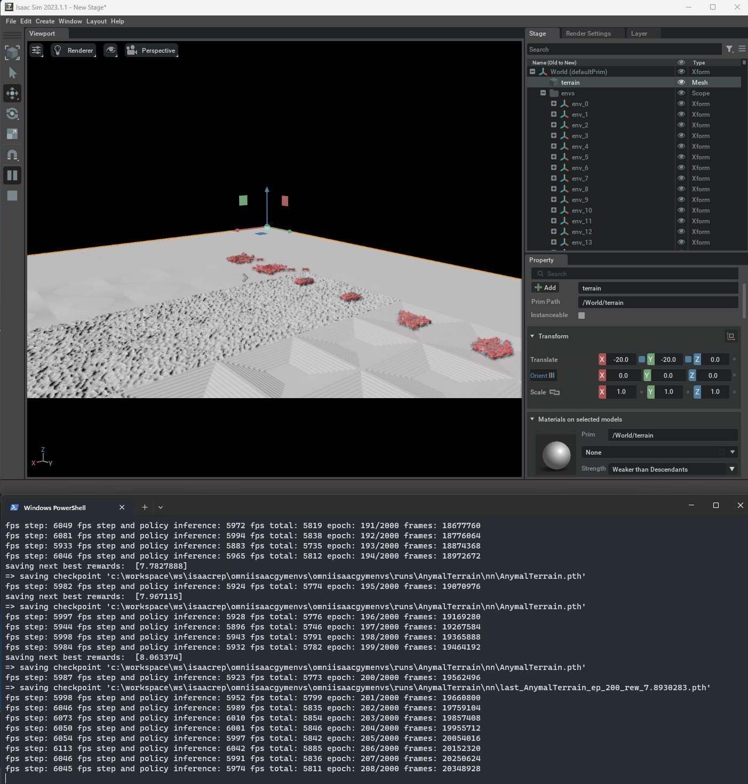
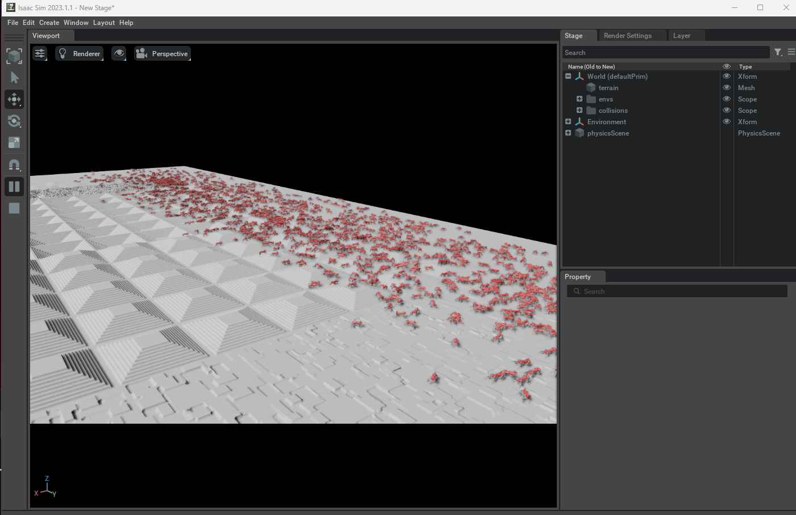
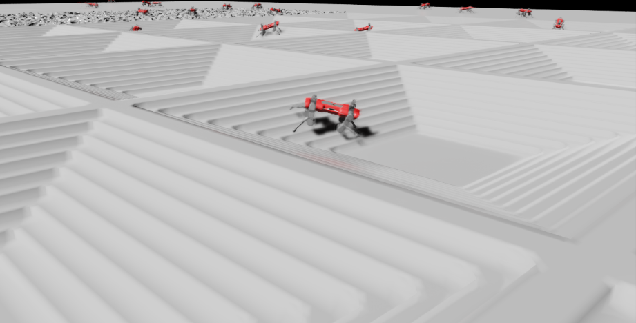

WSL, Cuda and Isaac Sim.
“Hope it works”
For quite a long time I’ve been interested in RL on the quadruped, however, Isaac Sim requires a RTX card. The only regret is that I bought a model with 4050 to save some bucks, not sure how this would influence the training process.
At first I thought that since Isaac sim is on windows, then maybe surely Isaac Gym is. It turned out that’s not how things work. The latter requires Ubuntu. And actually I’m not very fond of the idea of installing another system on my rig, as another laptop has already installed it and the fact proved that I won’t use it very often. It made me headache until I suddenly remembered the existence of WSL. Good thing that the level of GPU integration is quite high now, thanks a lot to MS and Nvidia, kinda magic.
And it was just like a joke that, I actually does not need Linux to run the demo, so maybe consider directly read Isaac Chapter.
Table of Contents
Environment
System: Win 11 23H2
WSL: Ubuntu 20.04 LTS
Windows Terminal
Default Powershell
IsaacSim: 2023.1.1
WSL installation and Setup
In terminal (run as admin), type one command is enough,1
wsl --install
However, this by default installs the latest ubuntu, so try this to list all available distros1
wsl --list --online
And get similar results:
Then run wsl —install -d “DistroName”, in my case it will be1
wsl --install -d Ubuntu-20.04
After everything is set. A reboot is needed to make changes take into effect. For more detailed documentation, check here
After reboot, you should be able to see a Ubuntu logo in start menu, or just start it in the dropdown list of terminal. Once complete the preprocessing, it will ask to create username and password, just like regular linux. Also additional information can be checked here
CUDA installation
There were a lot of documentations or tutorials on this, I only performed basic installation. So first, as the GPU support for WSL is quite good, run nvidia-smi in WSL terminal should be able to output the correct GPU, like this. 
Installing GPU driver should only be performed on windows, do not install additional GPU driver on Linux.
Microsoft’s doc mainly hyperlinked two website from Nvidia, one is essential.
According to the process
1 | $ sudo apt-key del 7fa2af80 #remove the old GPG key |
After this, do a simple post-installation. Add the following lines into ~/.bashrc1
2
3export PATH=/usr/local/cuda-12.2/bin${PATH:+:${PATH}}
export LD_LIBRARY_PATH=/usr/local/cuda-12.2/lib64\
${LD_LIBRARY_PATH:+:${LD_LIBRARY_PATH}}
Remember to source the profile.
At this time (a reboot may be required), check nvcc -V, CUDA info should display correctly. It should be similar to this:1
2
3
4
5nvcc: NVIDIA (R) Cuda compiler driver
Copyright (c) 2005-2023 NVIDIA Corporation
Built on Wed_Nov_22_10:17:15_PST_2023
Cuda compilation tools, release 12.3, V12.3.107
Build cuda_12.3.r12.3/compiler.33567101_0
Problem
Everything went too smoothly that could be called as weird, so a problem came up. It actually comforted me, as it should.
Maybe it’s due to the windows update, or maybe it’s the emulator disturbance, I found that WSL function in control panel is off, which is really weird. After turn it on and restart, things looks fine.
And as for the login info, I really suspect that I saw this more than once a day, maybe I’ll find out if it’s true tomorrow.
Proxy
Mainly followed this guy’s tutorial, and also realized that my proxy rule is not very helpful, sometimes I should use global for a proper connection.
GUI Glitch
Same as here, glitch for all GUI apps.
As a temporary fix, restart wsl everytime the computer restarts.
Nvidia Isaac Sim
Following the Workstation Installation Guide, running AppImage returns an error said that
The solution was to install libgtk-3-0 via apt
I suppose this could be ignored?
OK, guess problem solved, on the worse side, official community confirmed that it’s not supported on wsl2 yet. The error suggest that it requires a true desktop or display output, rather than virtual ones. Damn. So maybe I still need to ask for a laptop or PC for the following experiments. I think I gradually realized the necessity of laptops with storage bigger than 1TB (for develop purpose).
Another workaround:
So, I returned to the origin where I do not need Linux, funny it is.
On windows, the installation of Isaac Sim should be smooth and without any problem.
As suggested by Github readme, after the Sim is installed, clone the git repo into a workspace, and cd to the corresponding folder. Remember to find the correct python_path:1
2
3For Linux: alias PYTHON_PATH=~/.local/share/ov/pkg/isaac_sim-*/python.sh
For Windows: doskey PYTHON_PATH=C:\Users\user\AppData\Local\ov\pkg\isaac_sim-*\python.bat $*
For IsaacSim Docker: alias PYTHON_PATH=/isaac-sim/python.sh
And indeed the alias could be skipped.
After that, Install OmniIsaacGymEnvs as a python module for PYTHON_PATH: (Do not forget about the last dot)1
PYTHON_PATH -m pip install -e .
The pip should be able to search and install a lot of dependencies. And if once is not enough, try type the line multiple times.

To run a simple form of PPO from rl_games, use the single-threaded training script:1
PYTHON_PATH scripts/rlgames_train.py task=Cartpole
task=TASK- Selects which task to use. Any ofAllegroHand,Ant,Anymal,AnymalTerrain,BallBalance,Cartpole, etc. (these correspond to the config for each environment in the folderomniisaacgymenvs/cfg/task)
e.g. The following is the training of AnymalTerrain

Thanks to the MS’s DX12 that enabled GPU to accessing RAM, my 4050 ran out of dedicated VRAM. This thing is amazing. I think further investigation will be in the next post.

It can be seen that at the start, they barely stands.
2000 epoch took about 28455s, which is close to 8hrs. And they seems to be able to go across different terrains.


Some of them seem to have pretty good poses. But still, not all of them act in desired behavior. As some move forward with front or rear knees on ground. The performance is worse than the trained weight used in the demo, not sure how many epoches did that take.